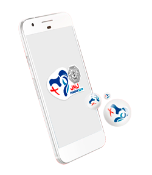

<ion-view view-title="Sobre">
  <ion-content>
    <div class="list list-inset">
      <div class="contentExpli item item-thumbnail-right ContentMarginNegative">
        
        <h2>O que é o Neolist ?</h2>
        <p>Queremos ajudar os grupos do Caminho Neocatecumenal na JMJ.</p>
      </div>
      <div class="text-Padrao" data-role="content">
        <p>O NeoList é um Aplicativo do Centro Neocatecumenal de Brasília, de apoio para os grupos de peregrinos do Caminho Neocatecumenal no Brasil, para a JMJ.</p>
        
        <p>Ele é uma ajuda para as comunicações entre os responsáveis e aqueles irmãos de apoio.</p>
        <p>Faça o cadastro para receber SMS do Centro Neocatecumenal de Brasília, durante a peregrinação.</p>
        <p>Lembre que em caso de mudança ou modificação de dados deverá atualizar seu cadastro.</p>

        <p>Os dados do Neolist devem ser usados com prudência, e somente para este fim, enquanto possui dados de Responsáveis dos diversos grupos de peregrinos.</p>

        <hr class="hr-padrao">

        <h4>Fabiano Carvalho</h4>
        <p class="text-info">Email: <a ion-item no-padding href="mailto:carvalho.fabiano@gmail.com" target="_top"><strong>carvalho.fabiano@gmail.com</strong></a></p>
        <p class="text-info">Telefone: <a ion-item no-padding href="tel:+5561991199497" target="_top"><strong>+55 61 99119-9497</strong></a></p>

        <br>

        <h4>Otávio Garrido</h4>
        <p class="text-info">Email: <a ion-item no-padding href="mailto:otavio.grrd@gmail.com" target="_top"><strong>otavio.grrd@gmail.com</strong></a></p>
        <p class="text-info">Telefone: <a ion-item no-padding href="tel:+5561982291992" target="_top"><strong>+55 61 98229-1992</strong></a></p>

        <br><br><br><br>
      </div>
    </div>
  </ion-content>
</ion-view>
